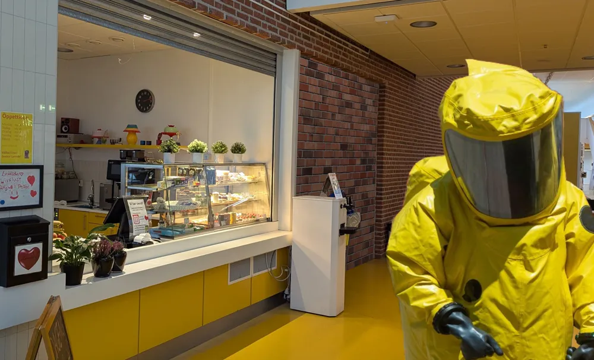

Östra gymnasiet

Kemikalieinspektionen överväger riva muren till sam-korridoren
Kemikalieinspektionen gjorde under veckan ett besök till Östra Gymnasiet för att överväga om situationen i samkorridoren har förbättrats till den grad att man kan riva muren och låta sameleverna blandas med de andra eleverna på skolan, utan sträckningar, svimmningar, nysningar eller allergiska reaktioner.
Enligt en representant för kemikalieinspektionen behöver sådana här utvärderingar utföras på avstängda områden varje år, för att kunna besluta utifall området fortfarande behöver vara avstängt. Löken följde med årets inspektör, ända fram till ingången till samkorridoren. Hon hade med sig en skyddsdräkt som hon uppger ska skydda speciellt mot parfymer och andra ämnen med stark odör, men trots det kunde Lökens reporter se henne vrida sig i smärta och trilla ihop på golvet genom fönstret. Vi återkommer med ett datum för begravningen.